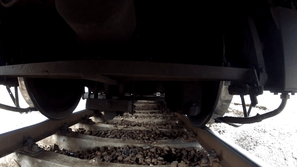

👁️🗨️ 基本概述
高铁轮轨姿态反映了车轮与钢轨之间复杂的动态相互作用和约束关系，掌握他们之间真实接触姿态是保障高速铁路安全运营的重要基础。如何能够精确获得高铁轮轨姿态一直是国内铁路科研的热门研究领域。但单单从二维图像上获取轮轨接触姿态是不精确、不可靠的，而将轮轨表面的特征点提取出来，重建出一个三维模型能更加真实、准确地获得轮轨接触姿态。
由于高铁列车运行速度快，轮轨表面相对光滑且无明显特征点，给基于特征点提取的三维重建带来了极大挑战。

三维重建技术是计算机视觉技术的一个重要分支，是计算机视觉和计算机图像图形学相结合的一个热门研究方向。根据测量时是否与被测物体接触，可分为接触式测量和非接触式测量。
接触式测量方法虽然测量精度高，但测量效率低，速度慢，操作不当很容易损坏被测物体表面，而且由于探头有一定表面积，对表面复杂的物体难以测量，不具备普遍性和通用性。非接触式三维测量方式又可以分为两大类：主动式测量和被动式测量。前者是向目标物体表面投射设计好的图案，该图案由于物体的高度起伏引起一定的畸变，通过匹配畸变的图案获得目标物体的。后者是通过周围环境光对目标物体进行照射，然后检测目标物体的特征点以得到其数据。非接触式测量方式以其无损坏、测量速度高、简单等优点已成为三维轮廓测量的研究趋势。
项目采用的编码结构光法利用投影仪投射出的一定模式的编码结构光图案对目标物体进行编码，利用摄像机获取物体图像，通过计算机对所得图像进行解码处理，利用摄像机中的图像点和投影仪中的点对应关系计算物体表面点的空间坐标，获得物体的三维信息，从而还原物体三维形状，结构光系统如下图所示。
编码结构光法三维重建技术主要由系统标定、结构光编码、图像获取、结构光解码和三维坐标计算等5个关键技术组成。
- 系统标定：系统由摄像机、投影仪和计算机组成，标定的目标是计算摄像机和投影仪内参矩阵、镜头畸变系数和两者之间相对位置的外参矩阵；
- 结构光编码：通过编码的方式使图像每一点的“身份”可以被识别；
- 图像获取：投影仪向物体投射编码结构光图案，图案会随物体表面形状的调制而发生畸变，摄像机拍摄被物体调制过的结构光图像，变形的图像反映了物体表面形状的三维信息；
- 结构光解码：对捕获的结构光图像进行解码，解码的方法取决于编码的方法，目的是建立相机平面和投影平面特征点之间的对应关系；
- 三维坐标计算：利用解码算法得出的特征点对应关系和系统标定结果，基于三角测量原理求出特征点的三维信息。
结构光的编码方式主要有时间编码和空间编码两种。时间编码虽具有较好的重建精度，但由于需要向物体表面投射多张图片，所以对于运动物体来说时间编码的结构光重建不是一个好的选择。空间编码相较于时间编码重建精度较低，但由于只需投射一张图片，所以常常用于动态物体的物体重建。
综上所述，针对项目中轮轨表面光滑，特征点不易提取的难点，可以通过向物体表面投射编码图案，人为地增加物体表面的特征点。由于空间编码只需单次投影，适合对高速运动的高铁轮轨进行重建。因此，本项目主要研究通过空间编码结构光方法获得相对更高精度和高密度的三维点云（点云，即物体表面特征点的集合，这些点包含了物体表面的三维坐标及颜色等信息）。